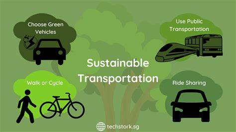
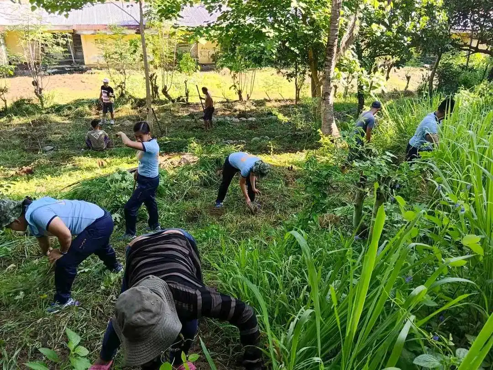
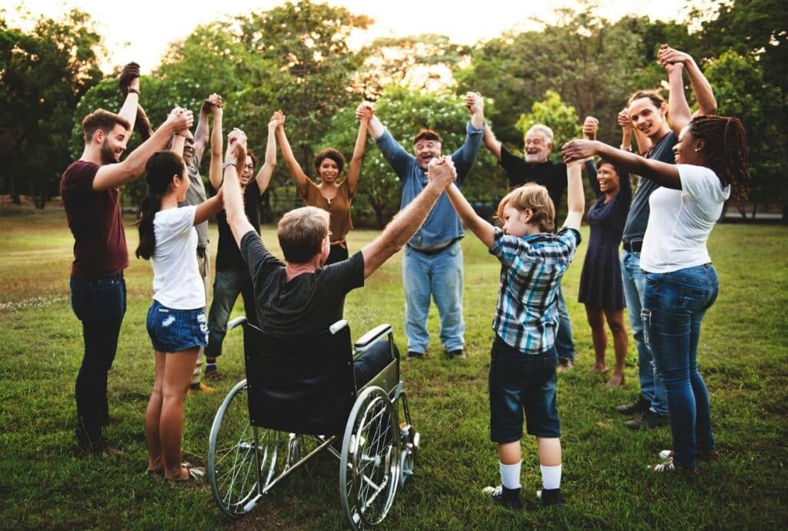
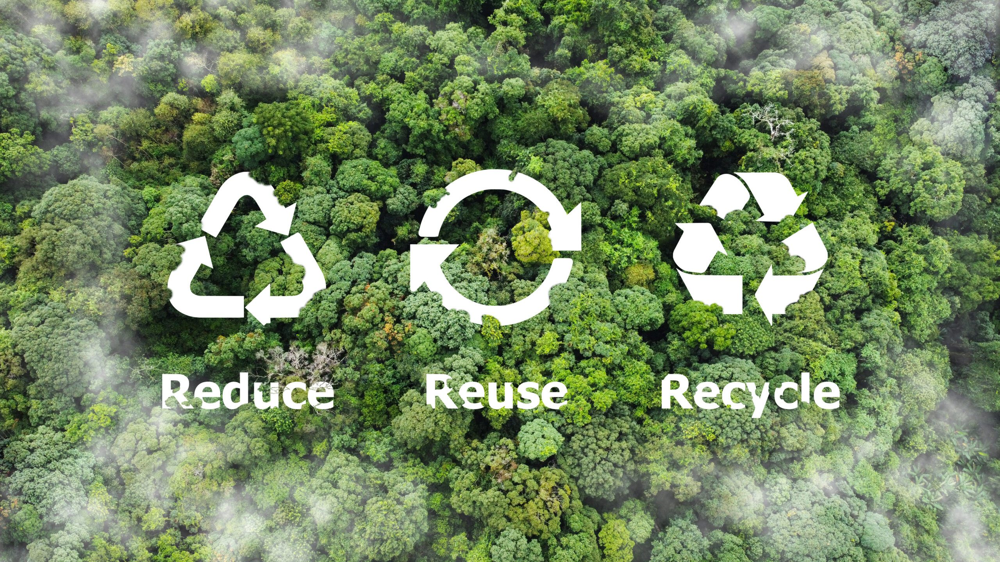
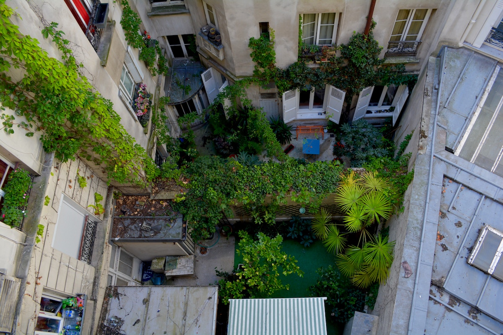

How can I contribute and help in solving these problems?
Here are some ways you can help in your everyday life:

1. Practice Sustainable Transportation
Choose eco-friendly ways to get around, like walking, biking, carpooling, or using public transit. These choices help reduce traffic, air pollution, and carbon emissions. Every small change in your commute can contribute to a more sustainable city.

2. Support Green Spaces and Clean Environments
Participate in tree-planting events, community clean-ups, or simply take care of your local surroundings. Keeping your environment clean protects public health and encourages biodiversity. Green spaces also make cities more enjoyable and resilient.

3. Advocate for Inclusive and Safe Communities
Stand up for fairness and speak out against discrimination or unsafe conditions in your neighborhood. Support policies that protect the rights of all citizens, especially vulnerable groups. A safe and inclusive city starts with engaged and compassionate residents.

4. Reduce, Reuse, and Recycle in Urban Living
Be mindful of your consumption—buy only what you need and reuse items when possible. Properly sorting and recycling waste reduces the strain on landfills and natural resources. Sustainable habits at home can make a big impact citywide.

5. Get Involved in Local Urban Initiatives
Join local efforts like clean-up drives, urban gardening, or public consultations on city projects. Volunteering and civic participation help shape more responsive and sustainable communities. Your voice and actions matter in building better cities for all.